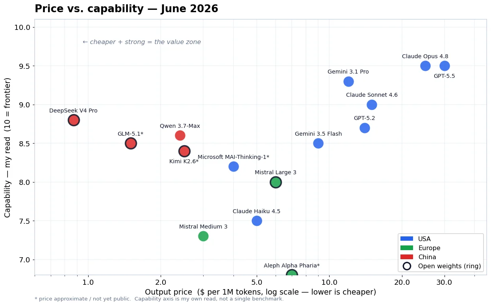
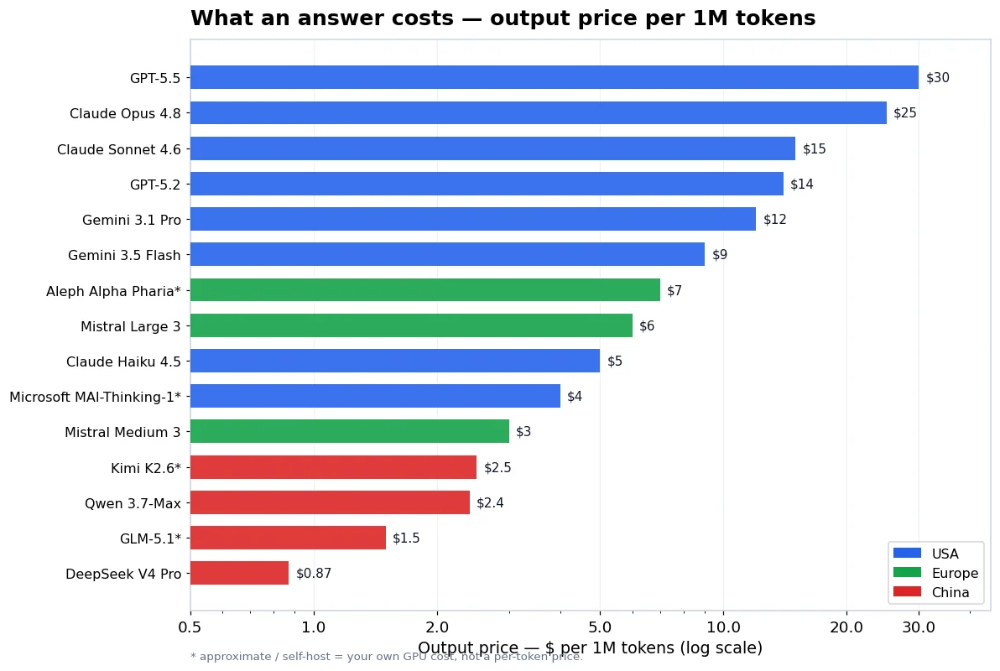
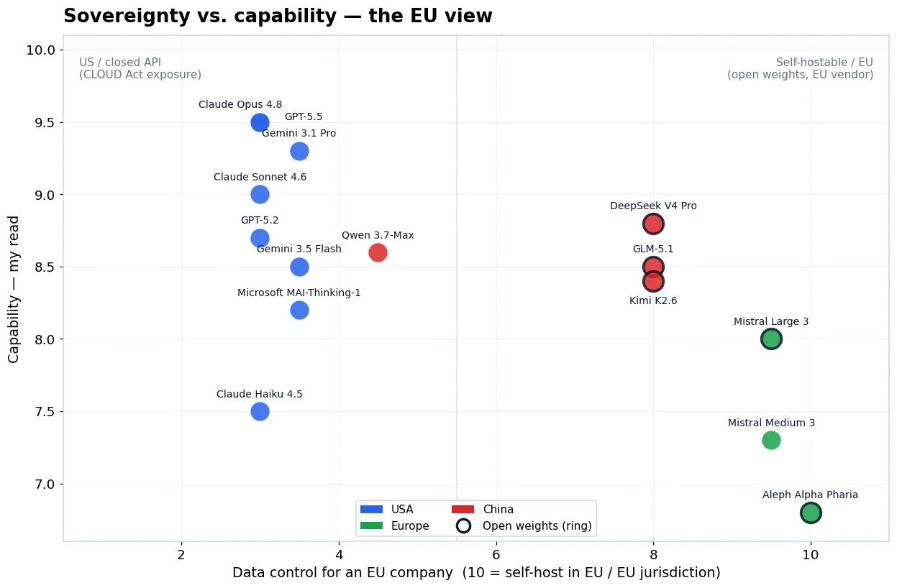

AI Models 2026: Prices, Task Costs and EU Hosting
The cheapest token price does not necessarily give you the cheapest finished task. That is the first thing I would check when choosing an AI model for an enterprise agent.
This AI model comparison for 2026 covers GPT-6, current Claude models, Gemini and a European open-weight option. I compare published API prices, explain what those prices leave out, and show how I would check EU deployment requirements. My recommendation is a shortlist and a test method, not a claim that one model wins every workload.
Updated 28 September 2026. The price table replaces the June snapshot. These are provider-direct standard API prices in USD per million tokens, not ChatGPT, Claude or Microsoft 365 seat prices. I have not run a new head-to-head benchmark for this update. The original June illustrations are preserved in a clearly marked historical section below.
Which AI models would I shortlist now?
For a new workload, I would test one cost-focused model and one stronger candidate with exactly the same task, tools and acceptance criteria. Then I would add a self-hosted candidate only if the operating requirements justify it.
| Starting point | Candidates to evaluate | What I would check first |
|---|---|---|
| Difficult reasoning or long agent tasks | GPT-6 Astra, Claude Fable 5.1 | Does the additional spend reduce failures or human repair? |
| Coding and everyday agent work | GPT-6 Sol, Claude Opus 5.5, Claude Sonnet 5 | Accepted changes, test results, latency and tool-use reliability |
| High-volume, narrow tasks | GPT-6 Luna, Gemini 3.8 Flash, Claude Haiku 4.5 | Schema validity, exception rate and escalation cost |
| An open-weight deployment under your control | Mistral Large 3 | Hardware footprint, throughput, maintenance and the exact license |
These are evaluation starting points, not measured rankings. The current catalogs distinguish the GPT-6 family and Claudeâs Fable, Opus, Sonnet and Haiku tiers. Availability in a direct API does not prove that the same model is available in your Foundry region or deployment type. OpenAI model catalog, Claude model catalog.
For Microsoft Foundry, I would check the model catalog in the actual subscription before designing around a model name. Model, region, quota and processing boundary have to work together. My Foundry model deployment guide covers that next step.
AI model API prices: September 2026
The table separates uncached input from output. It excludes tax, tools, search, storage, cache writes and hosting. OpenAI figures use the short-context Standard band. Read the providerâs full pricing rules before estimating a large-context agent.
| Model | Input / 1M tokens | Output / 1M tokens | Important qualification |
|---|---|---|---|
| GPT-6 Astra | $10.00 | $50.00 | Short-context Standard rate |
| GPT-6 Sol | $2.00 | $10.00 | Short-context Standard rate |
| GPT-6 Luna | $0.10 | $0.50 | Short-context Standard rate |
| Claude Fable 5.1 | $10.00 | $50.00 | Base API rate, not Fast mode |
| Claude Opus 5.5 | $4.00 | $20.00 | Base API rate, not Fast mode |
| Claude Sonnet 5 | $2.00 | $10.00 | Base API rate |
| Claude Haiku 4.5 | $1.00 | $5.00 | Base API rate |
| Gemini 3.8 Flash | $0.75 | $3.75 | Promotional Standard rate through 31 December 2026 |
| Mistral Large 3 | $0.50 | $1.50 | Hosted API price; not the cost of self-hosting |
Sources checked for this update: OpenAI pricing, Claude pricing, Gemini pricing, Mistral Large 3 model card.
Google currently lists Gemini 3.8 Flash Standard prices of $1.50 input and $7.50 output from 1 January 2027. Do not build a full-year business case using only the promotional rate. The other providers also distinguish features and processing tiers; a cloud marketplace or a negotiated agreement can have different billing.
Token counts also differ between models. The same document is not guaranteed to produce the same number of billable tokens. Caching and batch processing can help, but the cache-write, storage, eligibility and latency rules need to fit the workload.
What does a finished task actually cost?
Consider a support agent that reads an incident, checks approved guidance and returns a reviewable remediation plan. One request is not necessarily one completed incident. The agent might retry a tool, repeat context, ask another model or need a human correction.
My useful unit is:
cost per accepted task =
(model + tools + retrieval + infrastructure + human review cost)
/ number of tasks that meet the acceptance criteriaHere is a calculation, not a performance test. Assume each run uses 20,000 uncached input tokens and 2,000 billable output tokens, in the quoted pricing band, with no other charges:
| Model | Calculation | Model cost for one run |
|---|---|---|
| GPT-6 Luna | 0.02 Ã $0.10 + 0.002 Ã $0.50 | $0.003 |
| GPT-6 Sol | 0.02 Ã $2 + 0.002 Ã $10 | $0.06 |
| Claude Opus 5.5 | 0.02 Ã $4 + 0.002 Ã $20 | $0.12 |
| GPT-6 Astra or Claude Fable 5.1 | 0.02 Ã $10 + 0.002 Ã $50 | $0.30 |
At these assumptions, five Sol runs cost the same as one Astra run. That does not mean Astra needs one run or Sol needs five. It tells you the break-even question to measure. Equally, a narrow classifier may finish reliably with Luna and have no reason to use a larger model.
Count unsuccessful runs in the numerator. Include human repair time consistently. Otherwise a cheap model can look excellent because the spreadsheet silently gives it free human help.
How I would use real benchmarks
I use benchmarks to identify candidates, not to approve a production rollout. For coding, the official SWE-bench leaderboard distinguishes Verified, Lite, Multilingual and other tracks. Verified contains 500 human-filtered tasks. Its Bash Only comparison uses the same mini-SWE-agent environment, which is more useful for comparing models than mixing unrelated agent setups.
A score still belongs to a particular model version, agent, tool set, budget and test. A percentage from one track is not interchangeable with another. Neither proves that an agent can follow your permissions or handle your companyâs documents.
For an enterprise trial, I would keep a small, versioned set of real tasks:
- A normal case with a known correct result.
- An ambiguous case where the agent should ask a question.
- An outdated document that conflicts with the current policy.
- A tool failure that should not trigger an uncontrolled retry loop.
- A request the caller is not allowed to perform.
Record accepted outcomes, critical mistakes, billable usage, elapsed time and human edits. Keep prompts and tools consistent. My Foundry tracing and evaluation walkthrough explains the operational side. Do not claim a benchmark result if you have not actually run that test.
EU hosting: check the deployment, not just the model
I separate three questions: where data is stored, where inference happens, and who controls the service and its dependencies. A European address in a resource name does not answer all three.
Microsoft documents different processing boundaries for Global, Data Zone and geography-based Foundry deployments. Global can process in other Azure regions; Data Zone stays within the specified Microsoft data zone. That zone is not necessarily the same as a single country. Model support varies. Foundry deployment types.
Before approval, I would document:
- The exact model, version, provider and deployment type.
- Prompt, response, uploaded-file, search and tool data flows.
- Retention, abuse-monitoring, logging and access settings.
- The applicable agreement, subprocessors and operational owners.
- What happens during failover and when the selected model retires.
Self-hosting can give you more infrastructure control, but it does not automatically make an application private or compliant. A local model can still call an external tool, send telemetry or write sensitive text to logs. Mistral Large 3 provides Apache 2.0 weights, but its model card lists 675 billion total parameters. That is not a promise that it fits on one workstation GPU. Budget for the actual serving configuration, support and capacity.
I would involve the organizationâs privacy and security owners in that decision. A blog comparison cannot give a workload a blanket compliance approval.
My practical recommendation
Start with the least expensive candidate that might meet the taskâs quality and control requirements. Test it against a stronger model. Escalate only when you can explain the failed condition, and cap retries and spend.
For coding and agent workflows, I would include GPT-6 Sol and a current Claude candidate in the first evaluation. For narrowly defined high-volume work, I would test a smaller option early. If self-hosting is mandatory, I would build a separate shortlist around deployment requirements rather than pretending hosted token prices describe GPU economics.
The decision I want at the end is simple: this model completes this task, inside this data boundary, at this measured cost. That is more useful than a universal winner.
Original June illustrations
The illustrations below are preserved from the original June 2026 article. They are historical editorial graphics, not current prices, measured benchmark scores or compliance classifications. Some labels and assumptions are superseded by this update. Use the sourced tables and checks above for current decisions.
View the original June illustrations



Stay healthy, Cheers Jannik